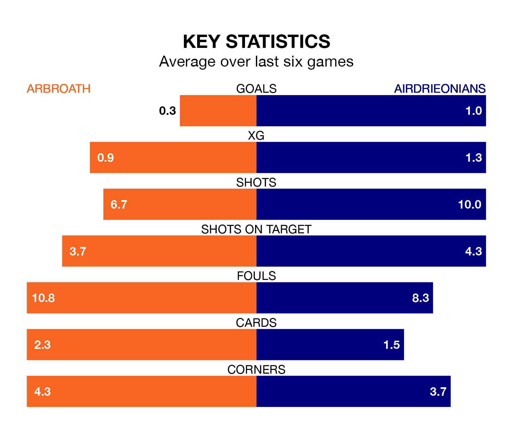

Arbroath are on a terrible run ahead of hosting Airdrieonians at Gayfield Park on Saturday, with just two points collected from their last six games.
Arbroath have picked up two draws and four losses in their last six Championship games, and face an Airdrieonians side whose last six games have brought three wins and two draws.
Arbroath are bottom of the table after 22 games, of which they have won five and drawn three, earning 18 points.
Airdrieonians are five places ahead of the home team in fifth, with eight wins and four draws putting them on 28 points.
In Joshua Rae, the visitors can rely on one of the league's safest pair of hands. He has kept six clean sheets in his 20 appearances this season, and only one other 'keeper – Dundee United's Jack Walton – has been able to prevent the opposition scoring on more occasions in the Championship.
In Arbroath's net, Derek Gaston has three clean sheets in 19 games. He has conceded a goal every 46 minutes, twice as often as the 90 minutes between goals for Rae.
In the last 10 years, Arbroath and Airdrieonians have played each other on 13 occasions. Arbroath won seven of them, Airdrieonians four, and they drew twice.
On average, Arbroath scored 1.8 goals and Airdrieonians 1.0 in those matches.
Their last meeting was on November 11, when Airdrieonians won 2-0 at home.
With 20 goals in 21 games so far this season, Airdrieonians are the league's lowest scorers with 1.0 goals per game. But they are conceding fewer than average too, letting in 24 goals at a rate of 1.1 per game.
Arbroath are also below average scorers, with 1.0 goal per game, compared to a league average of 1.4. They have conceded 2.0 goals per game.
Arbroath's last match was on January 27, a 3-0 loss against Greenock Morton.
Airdrieonians drew 1-1 with Partick Thistle last time out, also on January 27, with Craig Watson on the scoresheet.
Updated: 13:20 (UTC), 29/01/24